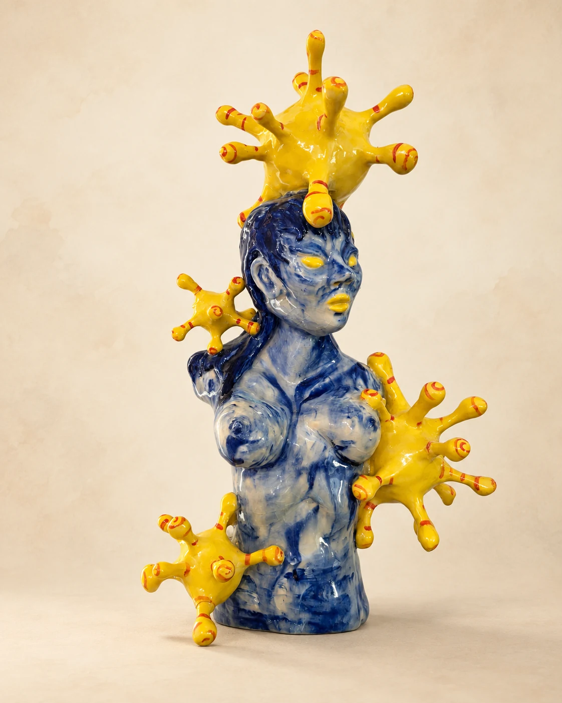
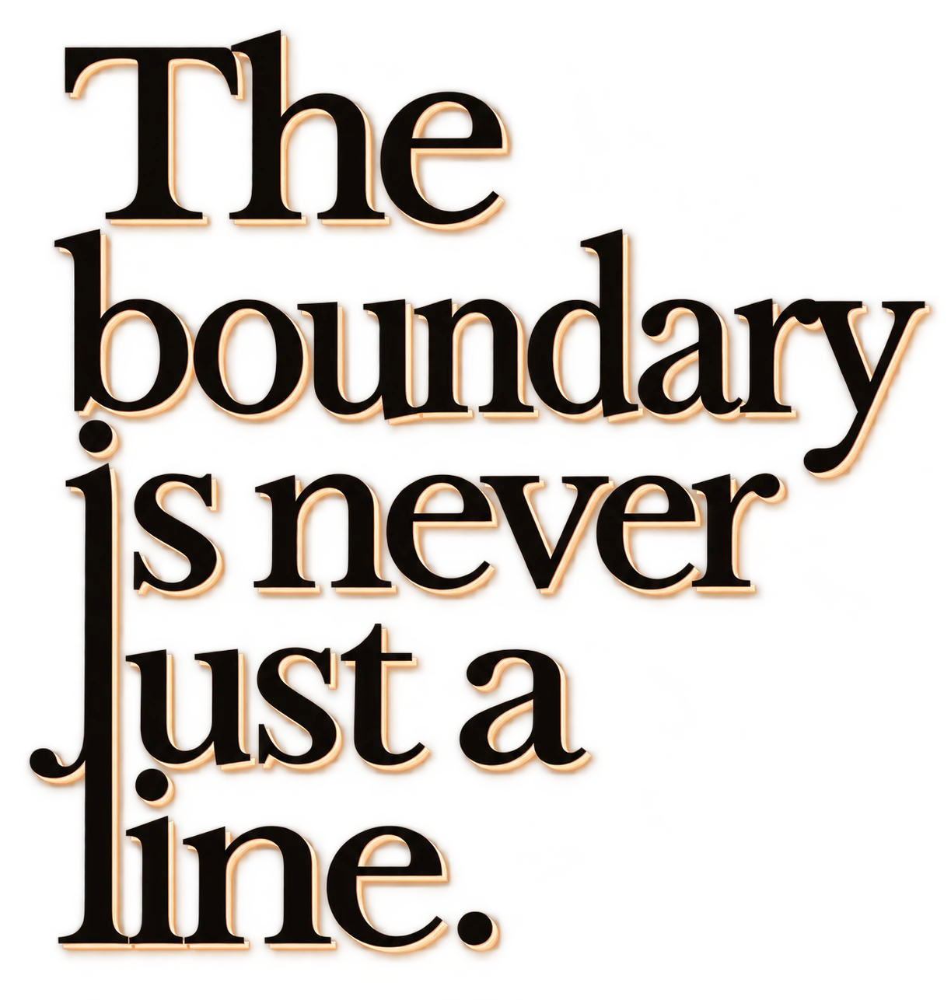
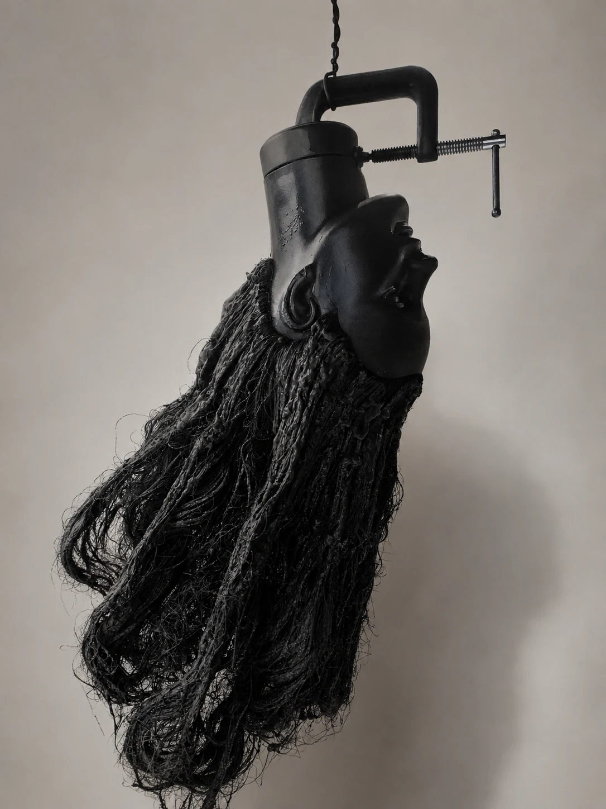
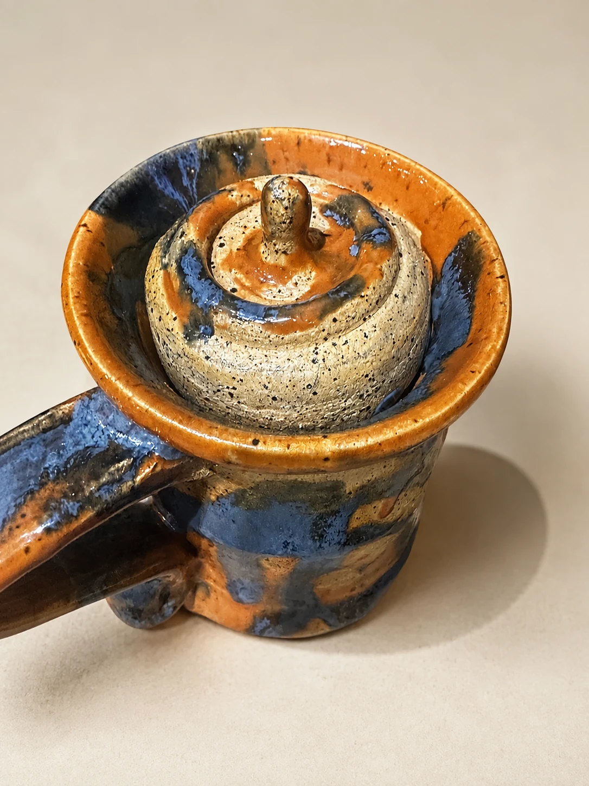
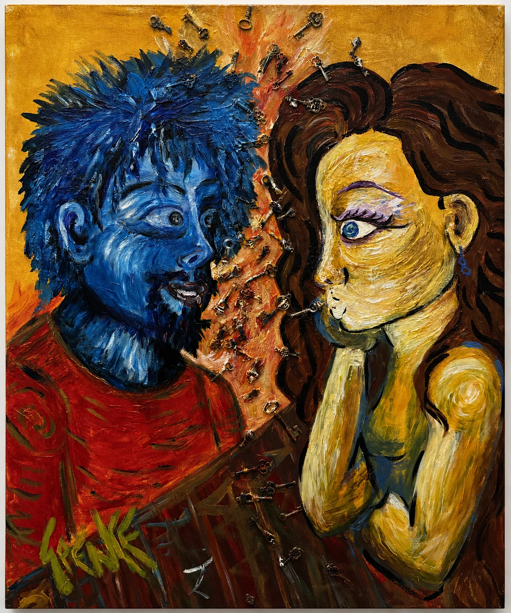
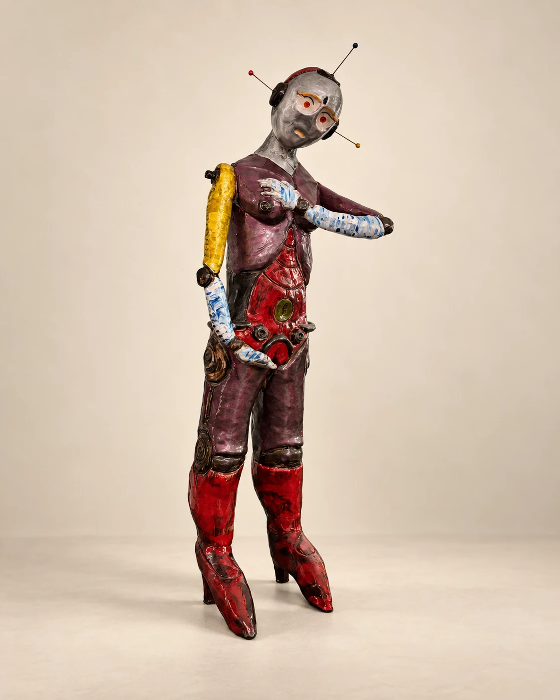
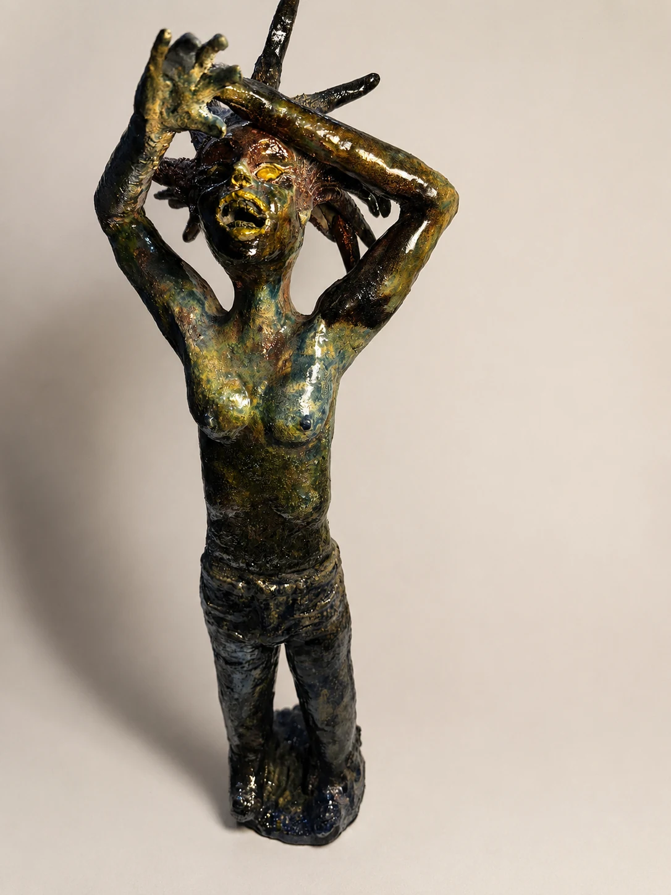

Artist · Sculptor · Creative Fabricator · Educator

I build objects, environments, and creative systems that make interior experience tangible—through sculpture, ceramics, mixed media, fabrication, and teaching.

01
Making is how I think.
My practice moves between sculpture, ceramics, mixed media, installation, scenic fabrication, visual communication, and teaching. Across those forms, the same questions recur: how does a structure shelter, how does material remember, and what makes a choice feel intentional rather than accidental?
Selected work
Material, image, environment.
The portfolio is organized around the ways I work rather than a single medium: objects, surfaces, constructed spaces, and collaborative creative environments.



Artist statement
My work begins where the self meets the world.
I return to boundaries because they are never neutral. A boundary can protect, divide, reveal, conceal, invite, refuse, or hold a wound closed long enough for it to become something else.
I am interested in objects and images that behave like thresholds. A surface may become a skin. A sculpture may become a shelter. A mark may become a record of pressure, repetition, care, or rupture.
Making, for me, is participation. Meaning is not separate from the hand, the room, the material, the viewer, or the object that remains after attention has passed through it. I am most interested in the point where intention becomes physical and something previously internal can finally be encountered.

About
I’m an Arizona-based artist, sculptor, creative fabricator, and educator.
I work across sculpture, ceramics, drawing, mixed media, installation, public art, scenic fabrication, and creative learning environments. My practice is shaped by questions of interconnectedness, interiority, protection, transformation, and the ways physical forms can carry meaning.
My professional path also crosses graphic design, studio operations, entrepreneurship, curriculum design, team leadership, and hands-on fabrication. I earned a BFA in Fine Arts with a sculptural emphasis and an M.Ed. from Arizona State University, following earlier training in advertising design.
Whether I’m building an object, a studio, a course, or a collaborative environment, the underlying impulse is the same: create conditions in which ideas can become tangible and people can make things that did not exist before.
View CV ↗
Selected press / archive
AI and ChatGPT are forcing Arizona teachers to rethink lessons ↗
Spencer in this story
Brown is the classroom-forward voice in this statewide look at AI in education. He describes using a custom GPT to turn photographed whiteboard plans into lessons and rubrics, and explains how students can use AI to develop and test ideas without surrendering their creativity.
Funky new art studio opens in Marana ↗
Spencer in this story
This profile captures Brown as the artist and entrepreneur behind Suntoad Studios, translating a lifelong drive to make art into a public-facing creative space. It records the community-building side of his practice: not only making objects, but building a place where other people could make, learn, and gather.
Bent Realities offers quirky and emotional expression by ASU seniors ↗
Spencer in this story
In this review of the Bent Realities exhibition at ASU Gallery 100, Brown appears as an emerging sculptor concerned with genuine expression and shared explorations of humanity. The article highlights his invitation for viewers to walk alongside the work—and to expand its meaning through their own interpretations.
Recognition / features
Creative practice & leadership
I build the work—and the conditions that let work happen.
My experience moves comfortably between individual studio practice and the operational realities of creative spaces: people, materials, schedules, tools, communication, budgets, and follow-through.
01
Studio & Fabrication
I work across sculpture, ceramics, mixed media, scenic construction, tools and equipment, material sourcing, spatial problem-solving, and the practical translation of an idea into a finished object or environment.
02
Teaching & Creative Leadership
I’ve taught at Verrado High School since 2018, with experience in fine-arts department leadership, curriculum development, district professional learning, student mentorship, and the creation of inclusive studio cultures.
03
Entrepreneurship & Visual Communication
I’ve operated a for-profit art studio, managed staff and vendors, handled budgeting and purchasing, and built on an earlier career in graphic design, advertising production, web content, and client communication.
BFAFine Arts · Sculptural Emphasis · Arizona State University
M.Ed.Master of Education · Arizona State University
ASBAdvertising Design
Contact
Let’s make something worth making.
For exhibitions, commissions, creative fabrication, studio leadership, teaching, or collaboration.
suntoad@me.com
Phoenix metropolitan area · Arizona